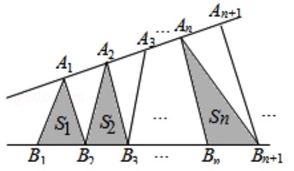

2018-浙江-理-10 【等比数列, 指数对数】
已知a1,a2,a3,a4成等比数列,且a1+a2+a3+a4=ln(a1+a2+a3),若a1>1,则
A.a1<a3,a2<a4
B.a1>a3,a2<a4
C.a1<a3,a2>a4
D.a1>a3,a2>a4
小蒋的解答:
知识点1:对数函数,缩放............👉指数对数知识点
lnx≤x+1,这是通过对题型观察所想到的,难点
ln(a1+a2+a3)≤a1+a2+a3−1
∴a4≤−1
知识点2:等比数列............👉等差等比知识点
设公比为q,由a1>1,a4≤−1,得q<0
容易得到:a1>0,a3>0,a2<0,a4<0
知识点3:对q分情况讨论............👉分类讨论知识点
根据答案选项,把情况分为下面两种情况
情况(1):当q≤−1时
a1+a2+a3+a4=a1(1+q+q2+q3)=a1(1+q)(1+q2)≤0
a1+a2+a3=a1(1+q+q2)≥a1>1
∴ln(a1+a2+a3)>0,根据题意,有矛盾
情况(2):当−1<q<0时
a3=a1·q2<a1
a4=a2·q2>a2
选B
2017-浙江-理-6 【等差等比】
已知等差数列{an}的公差为d,前n项和为Sn,则"d>0"是"S4+S6>2S5"的
A.充分不必要条件
B.必要不充分条件
C.充分必要条件
D.既不充分也不必要条件
小蒋的解答:
知识点1:等差数列,看到Sn与Sm的关系,作差法
S4+S6>2S5
⇔S6−S5>S5−S4
⇔a6>a5
⇔a6−a5>0
⇔d>0
知识点2:逻辑
选C
2016-浙江-理-6 【等差等比】
如图,点列{An},{Bn}分别在某锐角的两边上,且|AnAn+1|=|An+1An+2|,An≠An+1,
n∈N∗,|BnBn+1|=|Bn+1Bn+2|,Bn≠Bn+1,n∈N∗,(P≠Q表示点P与Q不重合),
若dn=|AnBn|,Sn为ΔAnBnBn+1的面积,则
A.{Sn}是等差数列
B.{S2n}是等差数列
C.{dn}是等差数列
D.{d2n}是等差数列

小蒋的解答:
知识点1:三角形面积
设BnBn+1上的高线是AnHn
易得:所有三角形Sn的高线AnHn是成等差增长的
题意:所有三角形Sn的底边都是相同的
∴所有三角形Sn的面积也是按等差增长的
选A
2015-浙江-理-3 【等差, 等比】
已知{an}是等差数列,公差d不为零,前n项和是Sn,若a3,a4,a8成等比数列,则
A.a1d>0,dS4>0
B.a1d<0,dS4<0
C.a1d>0,dS4<0
D.a1d<0,dS4>0
小蒋的解答:
知识点1:等差数列
a3=a1+2d,a4=a1+3d,a8=a1+7d,
知识点2:等比数列
a24=a3·a8
∴(a1+3d)2=(a1+2d)(a1+7d)
化简得:3a1d+5d2=0
∵d≠0,∴a1=−53d
a1d=−53d2<0
知识点2:等差数列公式
Sn=(a1+an)n2
S4=(a1+a4)42=2(a1+a1+3d)=−23d
dS4=−23d2<0
选B